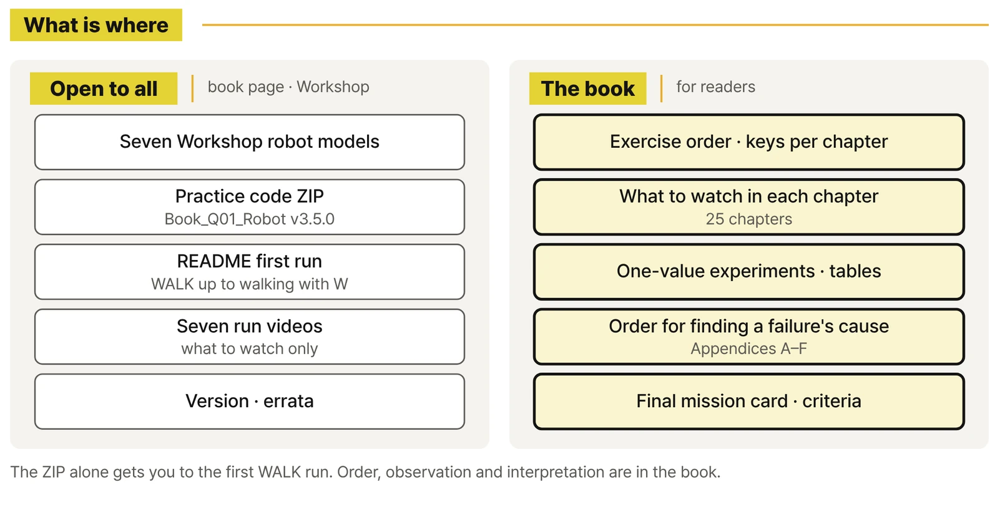

Frequently Asked Questions
Common questions to check before you pick up this book.
Q1. What kind of book is this?
A hands-on physical AI book. You walk a finished twelve-joint quadruped in RoboCo first, then follow a key press through gait → foot path → IK → joint angles → ServoMotor until it becomes a step. It's QUAD-01 in the Physical AI with RoboCo series and covers quadruped walking (WALK).
Q2. Can I start without knowing how to code?
Yes. PART 1 never opens the code; you use only WALK's direction keys and ACTION's number keys. Foot coordinates and joint angles come in from PART 2, and you meet Python by changing values in CONTROL PARAMETERS at the top of the start files, one at a time. It isn't a Python course.
Q3. Do I need to read CORE-01 first?
No. QUAD-01 is the entry book for the quadruped track. You start from scratch with this one quadruped, with no wheeled-robot experience needed and no code from other volumes to install. If you have read CORE-01, its input, control, motion, and observation flow carries over naturally.
Q4. What do I need for the exercises?
RoboCo on Steam, the seven practice robot models you subscribe to on Steam Workshop, and the practice code ZIP. The model guide and the code are on the practice files page. Check RoboCo's Steam page for OS support, requirements, and price.
Q5. Do I need to install Python separately?
No. The start files and library run on RoboCo's built-in Python. A code editor is handy for changing values in the start files.
Q6. Are the robot models in the ZIP?
No. You subscribe to the seven practice models on Steam Workshop and load them in RoboCo. Each model's Workshop link is posted on the practice files page as it goes live. The code ZIP holds the eight start files and Q01_Lib, the author's teaching library.
Q7. Can I do the exercises with just the code ZIP?
The README in the ZIP gets you through the first run: loading the WALK model and walking it with W. The order of each exercise, what to watch, which value to change and by how much, what to compare, and where to look when the robot falls are in the book's text and appendices.
Q8. Does it cover real quadruped hardware?
No. RoboCo is a robot sandbox game with a physics simulation. Hardware issues like motor heat, batteries, wiring, and communication lag aren't covered, and distance or tilt numbers aren't treated as real performance. What you learn is how to check results: repeat under the same conditions and change one value at a time.
Q9. Will I build an autonomous robot or use AI?
No. The final mission is a walking route a person drives by pressing keys in sequence. Choosing a gait from sensor input, and comparing rule-based with learning-based decisions, come in QUAD-02. QUAD-01 focuses on the joint, foot, and body control that those rest on.
Q10. How is the RoboCo API different from Q01_Lib?
Names like ServoMotor, InertialSensor, and TextScreen are RoboCo's official Python API. The IK, gait, body pose, and PID features in Q01_Lib come from the author's teaching library, not from RoboCo. The book keeps the two apart and uses that line to decide which layer to check when something goes wrong.
Q11. Why are the hind legs HL and HR, not RL and RR?
HL and HR stand for hind left and hind right. They're the same positions as RL and RR in other materials; the book and the code use HL and HR throughout.
Q12. Is the BALANCE tilting-platform exercise required?
It's optional. The BALANCE model has one Microcontroller on the robot and one on the platform, so you load two start files, one on each. You see how the robot reads body tilt with an IMU and corrects it with PID while the platform tilts. Do the direction check in Chapter 17 before turning balance control on.
Q13. Can schools and training programs use it?
Yes. With the same practice models, start files, and the Appendix D experiment sheets and mission checklist, you can run classes that repeat under identical conditions and compare before and after. See Book Sets & Courses for high school, university, and adult schedules. Terms for institutional use of the code are posted on this site.
Q14. Is it available in English?
The book is the Korean edition. On the English pages you can download Book_Q01_Robot_release_v3.5.0_en.zip, the practice code with comments and screen text in English. The console log is in English in both editions. An English edition of the book hasn't been announced.
Q15. Where can I buy it?
The Korean print (POD) edition and ebook are sold through online bookstores; the Buy page has the links.
